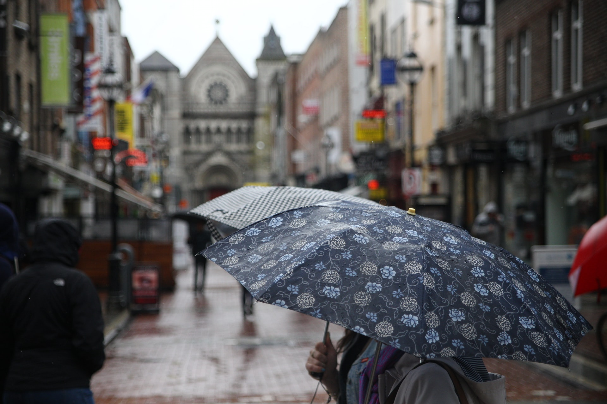
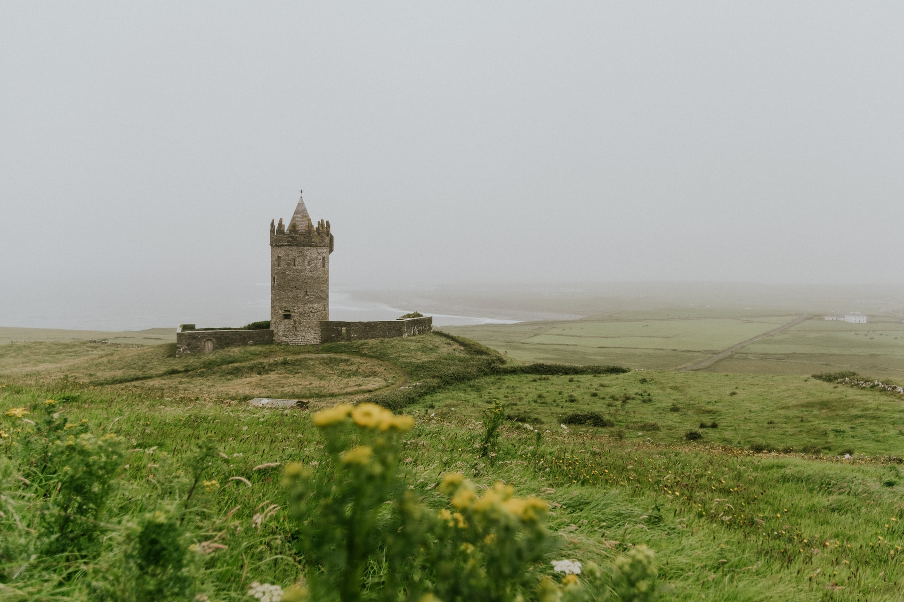
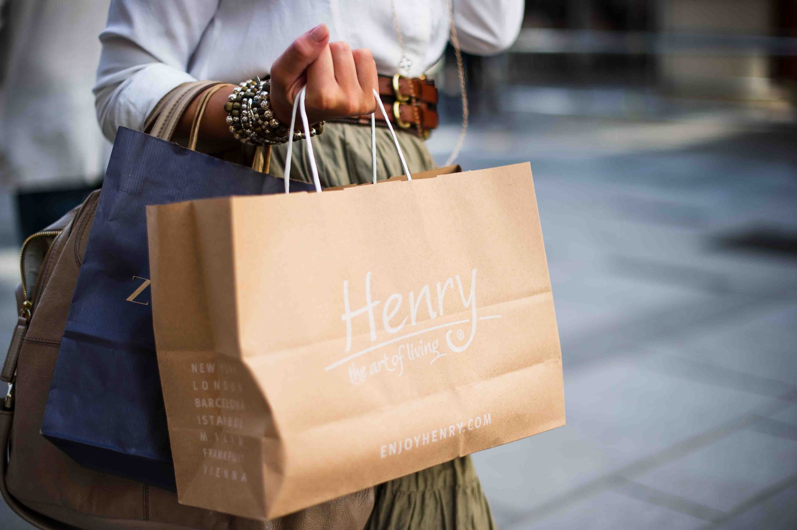

Living in Cork
In this section, we will talk about Irish weather, Food, and a little about places to see in and around Cork city.
Weather
Ireland is a small country, and the weather in the entire Ireland is Cold. Some other sites say that Ireland has mild weather, but if we talk about the weather from Desi's perspective, it is very cold, windy, rains all year round and, lacks sunshine. There is no warm or hot summer.
So, bring a few warm clothes from your country. I saif few because winter clothes from your country will not work in Ireland, so it is a good idea to buy them here in Ireland. And make sure they are waterproof because rain here is unpredictable. Also, do not forget to buy a good duvet for your bedroom(remember the cold weather thing).
Shopping
Ok, So if you want to buy a duvet, pillow, and other household items, you can go to Pennys or Guineys. They are reasonably priced, and you can find a good number of choices.
For buying clothes, you can go to H&M, Zara and Pennys. You can find a good number of choices and at a great price range. There are also many outlets of other brands that you can find at the city center or in the shopping malls.
Food

If you want to buy food, there is no better place than Lidl, Tesco, and Aldi. You can find almost everything there from household items, Bread, milk, meat(Not Halal), some frozen food, fruits, and everything else except Desi food and Desi spices. There are some shops which are generally called Asian stores, where you can buy all Desi food items and Halal Meats. For more info, check the link in the right section.
There are also some good Indian restaurants. Few of them are: